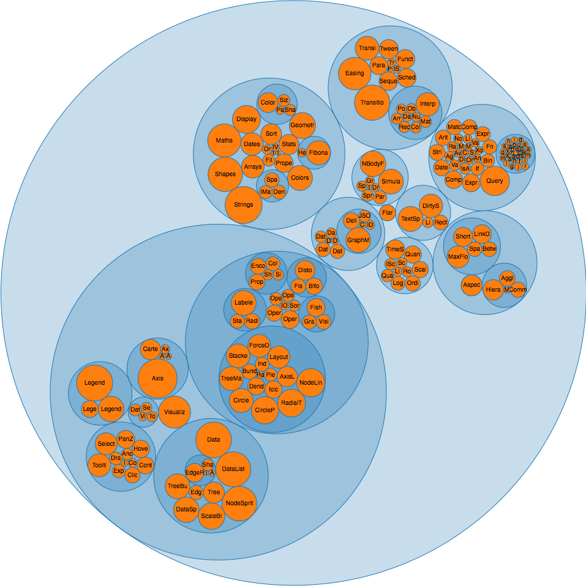
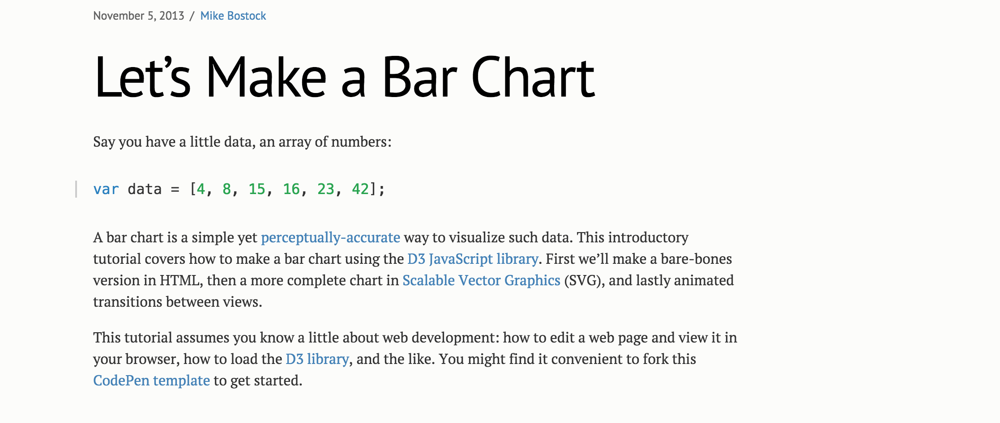
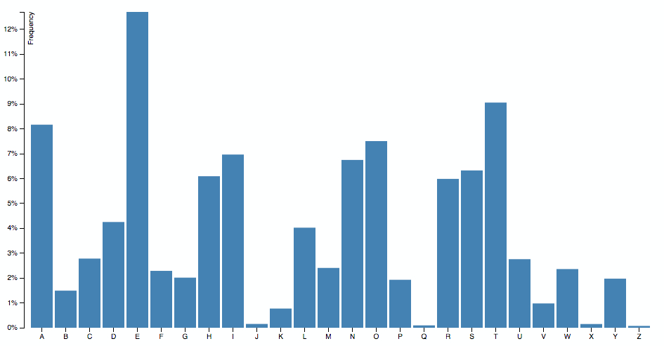

Introduction to D3

Online
Next up
- Introduction
- Applications
- D3.js Selections and Data Joins
- Bar Chart Example
- Patterns and Libraries
- Resources
What is D3.js?
- Data-Driven Documents
- Low level, General Purpose Visualization Library
- Manipulates data-based documents
- Open web standards
- Interactive charts
How does it work?
- Loads data
- Binds data to elements
- Transforms those elements
- Transitions between states
D3 Demo

D3 Niceties
- Based on attaching data to the DOM
- Styling of elements with CSS
- Transitions and animations baked in
- Total control over our graphs
- Amazing community
- Decent amount of publications
D3 v4 Update
- More modular
- Improved API
- Breaking changes
- Highly adopted
What can you do with D3?
Bar charts

Pie charts
Bubble charts
Choropleth

Map projections

Dashboards

Algorithm visualization

Artistic visualizations

D3 Data Joins
Transforms the DOM by selecting elements and joining to data
Data Join Code
let bars = g.selectAll(".bar")
.data(data);
bars.enter()
.append("rect")
.attr("class", "bar")
.attr("x", function(d) { return x(d.letter); })
.attr("y", function(d) { return y(d.frequency); })
.attr("width", x.bandwidth())
.attr("height", function(d) { return height - y(d.frequency); });
Data Join

Update, Enter
and Exit Pattern

D3.js Selections
- Subclass of array
- Provides methods to create and manipulate selected elements
- Array of arrays of elements
Example
Setup
// We have some random info
let data = 'randomStringToCreateAnArray'.split('');
Simplest Selection
// We create the root list element
let list = d3.select('.js-container')
.append('ul');
Data Join
let dataJoin = list.selectAll('.item')
// an empty selection, since the list container was empty
// looking for instantiations of data
.data(data);
// data, which would be bound to a
// selection
Functions that set properties
- .text()
- .property()
- .style()
- .attr()
Update
dataJoin.attr('class', 'update');
dataJoin
.attr('foo', function(d) {
return d.foo;
});
Enter
// for every time that we see data
// but we do not see an element
dataJoin.enter()
.append('li').classed('enter', true)
// we create an element
.merge(dataJoin)
// we merge the update and enter groups and apply an operation
.text(function(d) { return d; });
Exit
// Remove all elements as needed
dataJoin.exit().remove();
The new way is with .join()
Code example
Bar chart example by Mike Bostock
HTML file
Creating a reference and sizes
var svg = d3.select("svg"),
margin = {top: 20, right: 20, bottom: 30, left: 40},
width = +svg.attr("width") - margin.left - margin.right,
height = +svg.attr("height") - margin.top - margin.bottom;
Setting up scales
var x = d3.scaleBand().rangeRound([0, width]).padding(0.1),
y = d3.scaleLinear().rangeRound([height, 0]);
Margin Convention Setup
var g = svg.append("g")
.attr("transform", "translate(" + margin.left + "," + margin.top + ")");
Loading data
d3.tsv("data.tsv")
.then((data) => {
return data.map((d) => {
d.frequency = +d.frequency;
return d;
});
})
.then((data) => {
// Rest of code here
})
.catch((error) => {
throw error;
});
Setting up domain of scales
x.domain(data.map(function(d) { return d.letter; }));
y.domain([0, d3.max(data, function(d) { return d.frequency; })]);
Drawing axes
g.append("g")
.attr("class", "axis axis--x")
.attr("transform", "translate(0," + height + ")")
.call(d3.axisBottom(x));
g.append("g")
.attr("class", "axis axis--y")
.call(d3.axisLeft(y).ticks(10, "%"))
.append("text")
.attr("transform", "rotate(-90)")
.attr("y", 6)
.attr("dy", "0.71em")
.attr("text-anchor", "end")
.text("Frequency");
Drawing bars
g.selectAll(".bar")
.data(data)
.enter().append("rect")
.attr("class", "bar")
.attr("x", function(d) { return x(d.letter); })
.attr("y", function(d) { return y(d.frequency); })
.attr("width", x.bandwidth())
.attr("height", function(d) { return height - y(d.frequency); });
Output
Final code
D3 Patterns and
Best Practices
Component Patterns
D3 Testing
D3 is hard
D3 Libraries


Resources
General Resources
Block Explorer
Data-Joins Resources
Books

Conclusions
- D3 is a data visualization library
- You can do amazing things with it
- Data Joins are complex
- but not too much...
Thanks for listening!
- Twitter: @golodhros
- Check out my Blog
- Slides: http://golodhros.github.io/d3-intro